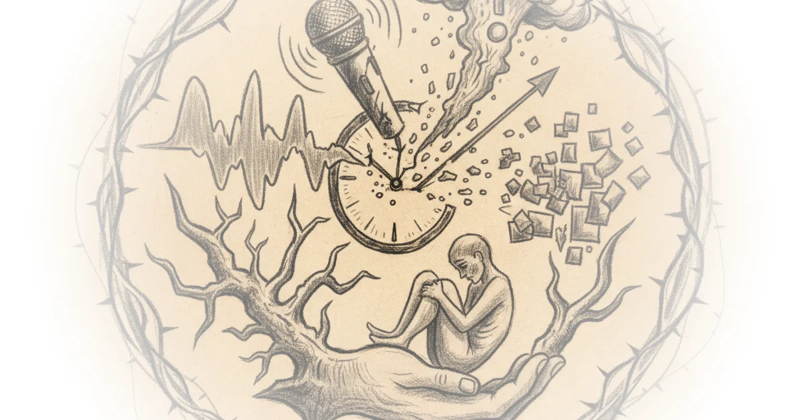

Doctor gives 6 reasons to be optimistic about coronavirus Rohin Francis · Medlife Crisis ·Mar 13, 2020 · 13 min read · Public Health
Hashashins: Origins of the order of assassins Kings and Generals · Kings and Generals ·Mar 12, 2020 · 17 min read · History
Doctor reacts to contagion (2011) - did it predict coronavirus? Rohin Francis · Medlife Crisis ·Mar 8, 2020 · 14 min read · Culture
A grandpa set his clock forward 1 hour. This is what happened to his heart Rohin Francis · Medlife Crisis ·Mar 8, 2020 · 13 min read · Public Health
Parallel worlds probably exist. Here’s why Derek Muller · Veritasium ·Mar 6, 2020 · 18 min read · Science
How we'll beat coronavirus - doctor explains how covid-19 will end Rohin Francis · Medlife Crisis ·Mar 5, 2020 · 10 min read · Public Health
Live: Celebrate 1,000,000 subscribers with q&a! Chris Chappell · China Uncensored ·Mar 3, 2020 · 55 min read · Media
Plato's euthyphro - which comes first: God or morality? Jeffrey Kaplan · Jeffrey Kaplan ·Feb 25, 2020 · 20 min read · Faith
10. China's han dynasty - the first empire in flames Paul Cooper · Fall of Civilizations ·Feb 24, 2020 · 108 min read · History
Tor vs vpn | which one should you use for privacy, anonymity and security The Hated One · The Hated One ·Feb 8, 2020 · 10 min read · Law & Rights
Bad r/Legaladvice - my neighbor’s bees are stealing my pollen Devin Stone · LegalEagle ·Feb 5, 2020 · 20 min read · Law & Rights
Live: Coronavirus update and q&a Chris Chappell · China Uncensored ·Feb 4, 2020 · 50 min read · Public Health 
This equation will change how you see the world Derek Muller · Veritasium ·Jan 29, 2020 · 15 min read · Science
Thorium. Is it the future of clean energy? Dave Borlace · Just Have a Think ·Jan 26, 2020 · 15 min read · Science
Immanuel kant's moral theory - a summary with examples Jeffrey Kaplan · Jeffrey Kaplan ·Jan 24, 2020 · 19 min read · Philosophy
Praying through cinema – understanding andrei tarkovsky Tom van der Linden · Like Stories of Old ·Jan 23, 2020 · 13 min read · Culture
Peter singer - ordinary people are evil Jeffrey Kaplan · Jeffrey Kaplan ·Jan 23, 2020 · 28 min read · Philosophy
Australian wild fires explained Dave Borlace · Just Have a Think ·Jan 19, 2020 · 13 min read · Science
Doctor explains challenges of colonising a new planet - science of the expanse part 2 Rohin Francis · Medlife Crisis ·Jan 17, 2020 · 20 min read · Public Health
Live in Taiwan 4: Election coverage & domino's boba pizza Chris Chappell · China Uncensored ·Jan 14, 2020 · 38 min read · Political Strategy
Live in Taiwan 3: The big vote Chris Chappell · China Uncensored ·Jan 11, 2020 · 12 min read · Political Strategy
Digital security part 2 - how to protect yourself on the internet The Hated One · The Hated One ·Jan 9, 2020 · 87 min read · Law & Rights
Caesar in gaul - Roman history documentary Kings and Generals · Kings and Generals ·Jan 9, 2020 · 62 min read · History
Plastic pollution : what are the sustainable alternatives? Dave Borlace · Just Have a Think ·Jan 5, 2020 · 13 min read · Science